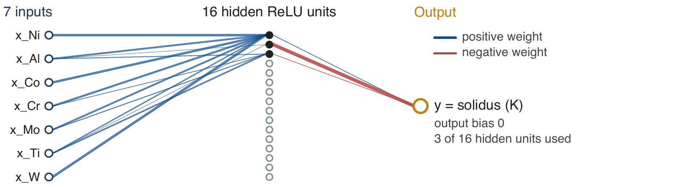

MATERIALS SCIENCE & ENGINEERING
TEXAS A&M UNIVERSITY
Department of Materials Science and Engineering
45

The model's own account (self-report)
Unit 0: a linear solidus that starts from pure Ni at 1,728 K, with a slope per at.% of solute (Al −4.5 K, Co +0.2, Cr −2.7, Mo −5, Ti −10, W +1.5). Unit 1: a further drop once Al + 1.5 Ti exceeds 12 at.%, toward the γ/γ′ eutectic. Unit 2: a further drop once the summed depression exceeds 100 K.
Opus 5.5, reply 1 of 2
145 weights, no data
3 of 16 hidden units used
ρ alone: 0.84 (2 replies)
extrapolation: 0.98